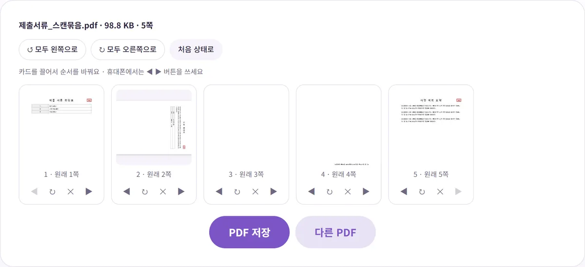
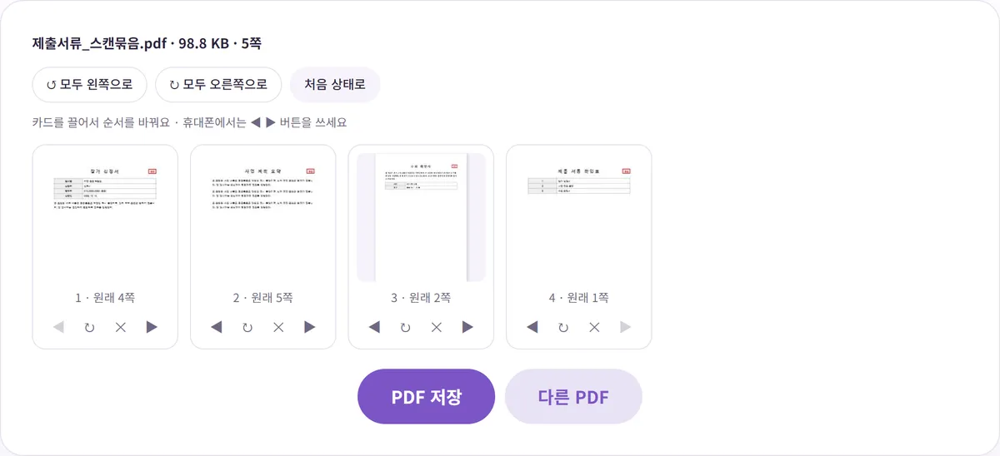

PDF 페이지 순서 바꾸기, 빼기, 돌리기 한 번에 하는 법
서류를 스캔해서 PDF로 만들었더니 한 장은 거꾸로, 한 장은 옆으로 누워 있고 중간에 빈 쪽까지 끼어 있어서 난감하셨죠? 이 글에서는 이런 PDF를 미리보기로 보면서 돌리고, 빼고, 순서를 맞추는 방법과, 이렇게 고쳐도 글자와 화질이 그대로 남는 이유를 실제로 해 본 결과와 함께 알려 드릴게요.
이런 상황에서 필요해요
- 스캔하다 생긴 문제: 복합기나 스캔 앱으로 여러 장을 넣었더니 한 장이 거꾸로 들어갔거나, 가로로 된 서류가 옆으로 누운 채 저장됐어요.
- 제출 서류 순서: 공고문에 '신청서 → 계획서 → 증빙서류 순서로 한 파일에'라고 정해져 있는데 스캔한 순서가 달라요.
- 필요 없는 쪽: 양면 스캔 때문에 빈 쪽이 끼었거나, 받은 PDF에서 내 것이 아닌 쪽을 빼고 보내야 해요.
이런 일은 벤토툴 PDF 페이지 편집 하나로 모두 할 수 있어요. 직접 만든 5쪽짜리 '스캔 묶음' 견본으로 해 봤어요. 순서는 확인표, 옆으로 누운 수료 확인서, 빈 쪽, 거꾸로 된 신청서, 사업 계획 요약이었고, 이걸 '신청서 → 사업 계획 → 수료 확인서 → 확인표' 순서로 바로잡는 게 목표였어요.

단계별로 따라 하기
- PDF 페이지 편집을 열고 PDF를 올리세요. 파일 이름, 용량, 쪽수가 위에 나오고 쪽마다 작은 그림(썸네일)이 쭉 펼쳐져요. 98.8KB짜리 5쪽 견본은 0.5초도 안 돼서 모든 썸네일이 떴어요.
- 누운 쪽은 카드 아래 ↻ 버튼을 눌러 똑바로 설 때까지 돌리세요. 한 번 누를 때마다 오른쪽으로 90도씩 돌아요. 옆으로 누운 쪽은 한 번이나 세 번, 거꾸로 된 쪽은 두 번이면 돼요.
- 필요 없는 쪽은 ✕로 빼세요. 실수로 뺐다면 '처음 상태로'를 누르면 뺀 쪽, 순서, 회전이 모두 처음으로 돌아가요.
- 순서는 PC에서는 카드를 끌어다 원하는 자리에 놓고, 휴대폰에서는 ◀ ▶ 버튼으로 한 칸씩 옮기세요.
- 'PDF 저장'을 누르면 원래 이름 뒤에 _edited가 붙은 PDF가 내려와요.

카드 아래 '1 · 원래 4쪽'처럼 지금 순서와 원래 쪽 번호가 함께 나와서, 많이 옮기다 보면 생기는 "이게 원래 몇 쪽이었지?" 하는 혼란이 줄어요. 견본은 저장까지 0.5초 정도 걸렸고, 결과는 똑바로 선 4쪽짜리 PDF였어요.
모든 쪽이 누워 있다면
가로 방향 서류를 통째로 스캔해서 전부 누워 있다면 하나씩 누를 필요 없이 '모두 왼쪽으로' 또는 '모두 오른쪽으로'를 한 번 누르면 돼요. 그다음 방향이 다른 몇 쪽만 따로 돌리면 끝이에요.
고쳐도 글자와 화질이 그대로인 이유
PDF 편집 도구 중에는 페이지를 한 장의 그림으로 찍어서 새 PDF를 만드는 방식도 있어요. 이렇게 하면 글자를 선택하거나 검색할 수 없게 되고, 확대하면 흐려질 수 있어요. PDF 페이지 편집은 그렇게 하지 않고 원래 페이지를 새 파일로 그대로 옮겨 담아요.
회전도 마찬가지예요. PDF 표준 문서(ISO 32000-1)에는 페이지마다 'Rotate'라는 항목이 있는데, 페이지를 화면에 보여 주거나 인쇄할 때 시계 방향으로 몇 도 돌릴지를 90의 배수로 적는 값이에요. 이 도구는 페이지 내용을 다시 그리지 않고 이 값만 바꿔요. 그래서 몇 번을 돌려도 화질이 떨어지지 않아요.
결과로 확인해 봤어요.
| 항목 | 원본 | 편집 후 |
|---|---|---|
| 쪽수 | 5쪽 (빈 쪽 포함) | 4쪽 |
| 용량 | 101,186바이트 | 101,140바이트 |
| 글자 선택·검색 | 됨 | 그대로 됨 (모든 쪽에서 글자 추출 확인) |
| 페이지가 그림으로 바뀌었는지 | - | 아니요 (그림 0개) |
빈 쪽을 하나 뺐는데 용량이 거의 같은 건, 빈 쪽은 원래 용량을 거의 차지하지 않았고 나머지 쪽이 손대지 않은 채 옮겨졌기 때문이에요. 반대로 말하면, 이 도구로는 용량이 줄지 않아요. 용량을 줄여야 한다면 순서 정리를 먼저 끝낸 뒤 PDF 용량 줄이기를 쓰세요. 압축은 페이지를 그림으로 바꾸는 방식이라 글자 선택이 안 되니, 정리한 파일은 따로 보관해 두는 게 좋아요.
스캔 문서를 정리할 때 알아 두면 좋은 점
- 스캔 PDF는 원래 글자 선택이 안 될 수 있어요. 종이를 스캔한 PDF는 처음부터 페이지 전체가 사진이라 글자를 선택할 수 없는 경우가 많아요. 이건 이 도구 때문이 아니라 원본이 그렇기 때문이고, 편집 후에도 원본 상태 그대로예요.
- 기울어진 스캔은 바로잡지 못해요. 회전은 90도 단위로만 돼요. 종이가 살짝 비스듬하게 스캔된 건 다시 스캔하는 게 가장 깔끔해요.
- 쪽이 많으면 일부만 따로 뽑는 게 빠를 수 있어요. 100쪽 중 3쪽만 필요하다면 하나씩 빼기보다 PDF 나누기에서 '1-3, 5'처럼 쪽 번호를 적어 뽑는 게 편해요.
- 암호 걸린 PDF: 열람 암호가 있는 PDF는 열 수 없어요. 암호를 풀 권한이 있다면 풀고 올리세요.
제출 서류 순서, 이렇게 맞추면 실수가 줄어요
순서를 맞추는 일 자체는 버튼 몇 번이면 끝나지만, 막상 해 보면 "어떤 순서가 맞더라?"에서 더 많이 헤매요. 아래처럼 준비하면 한 번에 끝낼 수 있어요.
- 안내문 순서를 먼저 적어 두세요. 공고문이나 제출 안내에 적힌 서류 목록을 메모장에 번호대로 옮겨 적고, 그 번호를 보면서 카드를 옮기면 헷갈리지 않아요.
- 쪽수를 세어 두세요. 신청서 2쪽, 계획서 3쪽처럼 서류별 쪽수를 알면 저장 전에 전체 쪽수가 맞는지 바로 확인할 수 있어요. 견본에서는 5쪽에서 빈 쪽 하나를 빼서 4쪽이 맞았어요.
- 돌리기 → 빼기 → 순서 순으로 하세요. 누운 쪽은 썸네일 글자가 잘 안 읽혀서 무슨 서류인지 알아보기 어려워요. 먼저 모두 똑바로 세우고, 빈 쪽과 필요 없는 쪽을 뺀 다음 순서를 맞추면 훨씬 수월해요.
- 저장한 파일을 처음부터 끝까지 넘겨 보세요. 썸네일은 작아서 비슷한 서류끼리 바뀌어도 모를 수 있어요. 저장한 PDF를 열어 한 쪽씩 넘기며 제목을 확인하세요.
휴대폰에서는 카드를 끌어서 옮기는 대신 ◀ ▶ 버튼을 써야 해요. 쪽이 많을 때 휴대폰으로 한 칸씩 옮기기는 번거로우니, 순서를 크게 바꿔야 한다면 PC에서 하는 게 편해요.
정리한 다음 할 일
제출 서류를 여러 파일에서 모아 한 파일로 만들어야 한다면 제출 서류 여러 개를 PDF 하나로 합치는 법을 이어서 보세요. 정리한 PDF에 서명까지 해야 한다면 PDF 계약서에 프린트 없이 서명·도장 넣는 법에 방법을 정리해 두었어요. 모든 작업은 내 브라우저 안에서 이뤄져서 서류 파일이 서버로 올라가지 않아요.
참고한 자료
글에서 소개한 도구, 회원가입 없이 바로 써 보세요.
🔀 PDF 페이지 편집 바로 쓰기